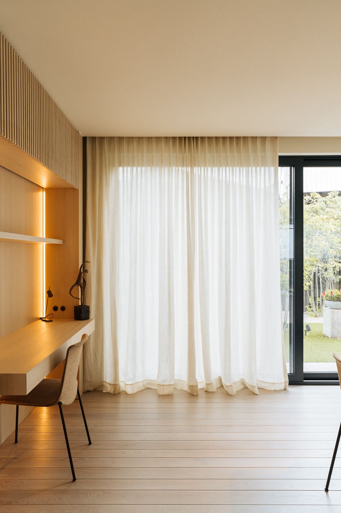
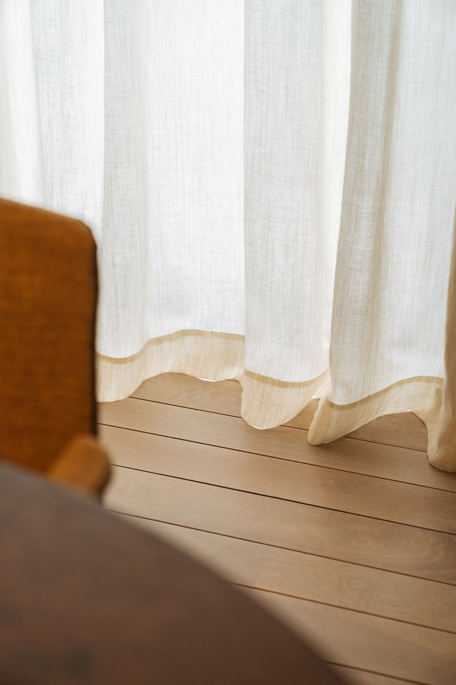
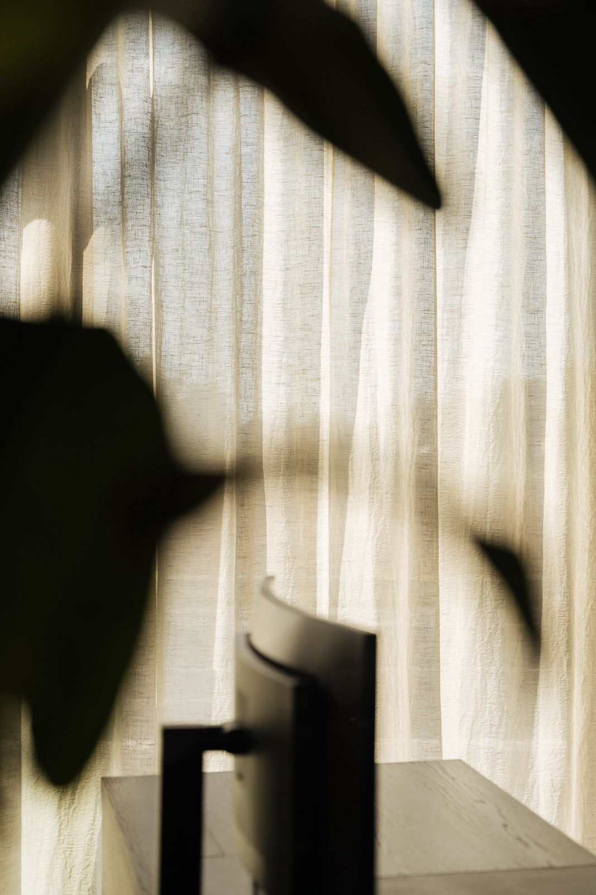

Handgemaakt voor jouw interieur
Gordijnen uit eigen atelier, shutters, lamellen, jaloezieën, kussens en stoffering. Wij adviseren, meten op, maken en plaatsen, allemaal onder één dak.
Handgemaakte gordijnen met HIB-label

Alles voor het raam,
en meer
Gordijnen
Handgemaakt in ons eigen atelier, met het HIB-label. Overgordijnen, vitrages en inbetweens.
02Shutters
Tijdloze binnenluiken op maat voor lichtregeling en privacy, met veel karakter.
03Lamellen & jaloezieën
Verticaal of horizontaal, in stof, hout of aluminium. Strak en praktisch.
04Kussens & stoffering
Handgemaakte kussens, overtrekken en zetelstoffering in bijpassende stoffen.

Elke plooi met de hand gezet
uit eigen atelier
Onze gordijnen komen niet uit een fabriek. We maken ze in ons eigen atelier, stuk voor stuk en op maat van jouw raam. Zo hangen ze mooi, vallen ze goed en gaan ze jaren mee.
Let op de details: een verzwaarde zoom die zacht op de vloer rust, een contrasterende boord, plooien die precies gelijk vallen.
Maak kennis met onsPersoonlijk, van begin tot eind
Kennismaking
In onze showroom of bij jou thuis. We luisteren naar je wensen, je stijl en je budget.
Advies & opmeting
We brengen stalen mee, meten nauwkeurig op en maken een heldere offerte.
Maatwerk
Je gordijnen en kussens worden met de hand gemaakt in ons eigen atelier.
Plaatsing
We hangen alles zorgvuldig op en vertrekken pas als alles perfect hangt.

Voel de stoffen, zie de kleuren
Maak een afspraak in onze showroom of vraag een vrijblijvend bezoek aan huis aan.
Contacteer ons